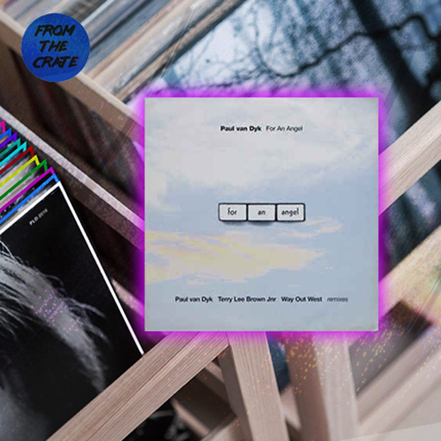

Paul van Dyk “For an Angel”


The birth of our underground brand Factory 93 not only brought on an adrenaline rush reminiscent of the renegade warehouse era of raving—on which Insomniac was founded—but it also had us thinking back to all the people, places and parties that made this whole operation possible. And with that came a burning desire to crack open our collection and dust off the classic records we couldn’t live without. Through our From the Crates series, we break out seminal and obscure cuts alike, imparting some knowledge in the process.
The time is the late ‘90s, and something very special is happening, indeed. The exhilarating promise of scattered rave scenes around the world has crystalized into a global cultural movement—a dynamic fusion of technology, art, and performance—which appears unlimited in its potential.
Each country’s respective early scenes were combining into something far greater than the sum of their parts. Early acid house and warehouse raves in the UK had developed into the notorious “superclub” culture; the pioneering early scenes of US cities like Detroit, Chicago, and NYC appeared destined at that point to storm the mainstream; meanwhile, Berlin’s rave scene had taken on a similar near-mythical status, rising from the euphoria of a newly reunified Germany after the fall of the Berlin Wall brought the East and West sides of the city together, releasing an energy of unprecedented freedom in the air.
While Berlin might have since become known for its rather more militant, serious-faced approach to house and techno, oddly it was precisely that city that gave birth to one of the most iconic, powerful, and emotionally resonant records to ever emerge from the trance scene: Paul van Dyk’s “For an Angel.”
While the record has been reworked and remixed more times than it’s worth delving into, the iconic version released in 1998 boasts a certain transcendental quality that could never quite be replicated.
How to capture the emotions “For an Angel” triggered at that time? Its intro leaps straight into a signature PvD-style kick, prepping it immediately for peak-time euphoria—though arguably, it was the more celestial, cerebral elements responsible for sending glorious shivers down the spines of so many clubbers. A mysterious, ethereal voice whispers, “For an angel.” While at a glance, it might appear like a throwaway vocal sample, particularly considering how much of a trope it’s since become, there’s mystery in the enigma, a tantalizing whisper from the exciting future that club culture promised at the time.
“[Trance] emerged from techno in the clubs of Frankfurt and the squats of East Berlin, and was carried to the genre polygamy of Ibiza’s club scene; it flew back on cheap flights to the parties of Conservative-era England and the slick bombast of the Netherlands,” Pitchfork pointed out recently in a surprise defense of the oft-maligned genre. “For much of the ‘90s, trance was the logical evolution of the club cultures born in Detroit and Chicago—to that era’s listeners, it was the future.”
While there are tantalizing snippets of melody in the intro (which proved more than enough to send clubbers into a wild frenzy), van Dyk abruptly halts at the first drop and pivots into an exploration of the kind of ‘90s futurism that glistened in trance at the time—just as defining as those incredible breakdowns. A driving soundscape unfolds around its journey-like inertia, which is punctured by squiggly 303 acid (sonic shorthand for the “future” at the time). For this particular teenage raver, it tapped into the same exhilarating excitement that drew me to early jungle futurism like “Mutant Jazz.”
Snippets of the record’s iconic harmony channel an incredible momentum toward the breakdown, when those beautiful, haunting chords are allowed to shine in all their glory. “For an Angel” boasts one of the most iconic trance melodies ever; there’s a certain softness and genuine emotion, which so often eluded trance producers in the years to follow, while they endlessly rehashed ideas from the past.
Before the listener is drawn back into the slipstream for the record’s dramatic, action-packed third act, its core melody is embellished with that haunting piano refrain, which van Dyk allows to ascend into the spotlight. It’s here that his genuine musicianship shines, often heard in his music in the years afterward when he explored the creative tensions between cerebral trance trippiness and traditional songwriting.
In terms of its cultural influence, “For an Angel” helped trigger the trance explosion that led to its heralded “golden year” shortly after, in 1999. Fellow veteran Ferry Corsten lists it alongside other formative classics, like his own “Out of the Blue,” Armin van Buuren’s “Communication,” and Rank 1’s “Airwave.”
“It was all within a year or two when that whole sound just exploded,” Corsten says. “It was that year that really set the tone for a lot that came after that.”
Much of the fevered excitement that followed gravitated around a certain iconic nightclub in the English city of Sheffield (with a rather recognizable lion as its logo). Gatecrasher grew to become the UK’s spiritual home of trance, where the somewhat godlike PvD belted out six-hour journeys.
However, long before Gatecrasher in Sheffield, there was E-Werk in Berlin, the iconic club where van Dyk held a defining residency that inspired the rework of “For an Angel,” which arrived in 1998.
Like many iconic Berlin clubs during the ‘90s, E-Werk was situated in one of the many abandoned Berlin buildings that lay unoccupied in the ravaged urban landscape of East Berlin following reunification, a former electrical substation located just a stone’s throw from Checkpoint Charlie.
Van Dyk’s connection with Berlin’s fledgling techno scene actually stretched back before reunification, when he was, in his own words, “sitting in my room in East Berlin, on the wrong side of the wall, listening illegally to West Berlin radio.” After the fall of the Berlin Wall, he arrived fresh-faced to join a new cultural movement that had already been bubbling and growing on the western side of the city.
“I also wasn’t the only one in East Berlin listening illegally to West Berlin radio stations; there was a huge scene, a huge group of people that loved this music but could never come to a show because of the Berlin Wall standing in the middle of it. So, as soon as the Wall went down, this whole energy from the East German kids exploded into West Berlin. This really created a momentum.”
A small quirk of history is that an early version of “For an Angel” arrived five years earlier, featured on PvD’s debut artist album 45 RPM in 1994. While his stylistic roots in earlier, more cerebral Frankfurt trance are apparent here, it was his E-Werk residency that added the extra sprinkles.
The club was the focal point for a different side of Berlin’s early scene—distinct from the influence of Detroit techno that defined staples like Tresor—instead, serving as a satellite for the sounds emanating from Frankfurt’s enigmatic techno and trance scene at the time. With the E-Werk era drawing to a close when the club shuttered its doors in 1997 (reopening in the new millennium as an event space that remains open to this day), van Dyk paid his respects the following year when he released his “E-Werk Remix” on Deviant Records.
Somewhat poetically, the record’s success also signaled van Dyk’s transcending the Berlin scene within which he’d cut his teeth, to become one of the world’s leading DJs. The following year, he released his definitive album masterpiece, Out Here and Back, during the height of the Gatecrasher boom. And while the trance scene had its roller-coaster ups and downs in the years to follow, van Dyk’s “superstar DJ” status locked in with longevity (winning the DJ Mag Top 100 in both 2005 and 2006).
The E-Werk days might be long gone, but if you listen closely to those haunting whispers of “For an Angel,” you might still hear that same optimism and promise of a bright imagined future that, when you were in the middle of a sweaty late-‘90s dancefloor, felt like it was waiting just around the corner.